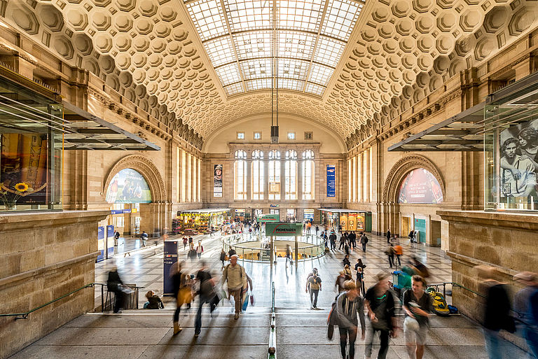

Best Tourist Attractions Leipzig
- Leipziger Zoo Der Zoo Leipzig ist ein 26 Hektar großer parkartig gestalteter Zoologischer Gar ten am Rosental, nordwestlich der Leipziger Innenstadt. Er zählt zu den artenreichsten Zoos in Europa. Seit 2000 wird der Zoo großflächig unter dem Projektnamen „Zoo der Zukunft“ umgebaut.
- City-Hochhaus Leipzig
- Wintergartenhochhaus
- Leipzig Hauptbahnhof
Leipzig Hauptbahnhof ist der zentrale Personenbahnhof in Leipzig und steht mit täglich rund 120.000 Reisenden und Besuchern auf Platz 13 der meistfrequentierten Fernbahnhöfe der Deutschen Bahn.


Das City-Hochhaus Leipzig steht am südwestlichen Rand des Augustusplatzes in Leipzig. Das Hochhaus mit 34 Etagen ist ein Wahrzeichen der Stadt und mit 142,0 Metern das höchste Gebäude Leipzigs.
Das Wintergartenhochhaus ist ein Hochhaus in Leipzig. Das Wohngebäude wurde von 1970 bis 1972 als Wohnhochhaus Wintergartenstraße erbaut und ist nach dem City-Hochhaus und dem Hotel The Westin das dritthöchste Hochhaus Leipzigs.